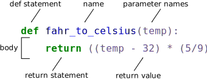

Creating Functions#
Objectives
Define a function that takes parameters.
Return a value from a function.
Test and debug a function.
Set default values for function parameters.
Explain why we should divide programs into small, single-purpose functions.
Questions
How can I define new functions?
What’s the difference between defining and calling a function?
What happens when I call a function?
At this point, we’ve seen that code can have Python make decisions about what it sees in our data. What if we want to convert some of our data, like taking a temperature in Fahrenheit and converting it to Celsius. We could write something like this for converting a single number
fahrenheit_val = 99
celsius_val = ((fahrenheit_val - 32) * (5/9))
and for a second number we could just copy the line and rename the variables
fahrenheit_val = 99
celsius_val = ((fahrenheit_val - 32) * (5/9))
fahrenheit_val2 = 43
celsius_val2 = ((fahrenheit_val2 - 32) * (5/9))
But we would be in trouble as soon as we had to do this more than a couple times.
Cutting and pasting it is going to make our code get very long and very repetitive,
very quickly.
We’d like a way to package our code so that it is easier to reuse,
a shorthand way of re-executing longer pieces of code. In Python we can use ‘functions’.
Let’s start by defining a function fahr_to_celsius that converts temperatures
from Fahrenheit to Celsius:
def explicit_fahr_to_celsius(temp):
# Assign the converted value to a variable
converted = ((temp - 32) * (5/9))
# Return the value of the new variable
return converted
def fahr_to_celsius(temp):
# Return converted value more efficiently using the return
# function without creating a new variable. This code does
# the same thing as the previous function but it is more explicit
# in explaining how the return command works.
return ((temp - 32) * (5/9))
{alt=’Labeled parts of a Python function definition’}
The function definition opens with the keyword def followed by the
name of the function (fahr_to_celsius) and a parenthesized list of parameter names (temp). The
body of the function — the
statements that are executed when it runs — is indented below the
definition line. The body concludes with a return keyword followed by the return value.
When we call the function, the values we pass to it are assigned to those variables so that we can use them inside the function. Inside the function, we use a return statement to send a result back to whoever asked for it.
Let’s try running our function.
fahr_to_celsius(32)
This command should call our function, using “32” as the input and return the function value.
In fact, calling our own function is no different from calling any other function:
print('freezing point of water:', fahr_to_celsius(32), 'C')
print('boiling point of water:', fahr_to_celsius(212), 'C')
freezing point of water: 0.0 C
boiling point of water: 100.0 C
We’ve successfully called the function that we defined, and we have access to the value that we returned.
Composing Functions#
Now that we’ve seen how to turn Fahrenheit into Celsius, we can also write the function to turn Celsius into Kelvin:
def celsius_to_kelvin(temp_c):
return temp_c + 273.15
print('freezing point of water in Kelvin:', celsius_to_kelvin(0.))
freezing point of water in Kelvin: 273.15
What about converting Fahrenheit to Kelvin? We could write out the formula, but we don’t need to. Instead, we can compose the two functions we have already created:
def fahr_to_kelvin(temp_f):
temp_c = fahr_to_celsius(temp_f)
temp_k = celsius_to_kelvin(temp_c)
return temp_k
print('boiling point of water in Kelvin:', fahr_to_kelvin(212.0))
boiling point of water in Kelvin: 373.15
This is our first taste of how larger programs are built: we define basic operations, then combine them in ever-larger chunks to get the effect we want. Real-life functions will usually be larger than the ones shown here — typically half a dozen to a few dozen lines — but they shouldn’t ever be much longer than that, or the next person who reads it won’t be able to understand what’s going on.
Variable Scope#
In composing our temperature conversion functions, we created variables inside of those functions,
temp, temp_c, temp_f, and temp_k.
We refer to these variables as local variables
because they no longer exist once the function is done executing.
If we try to access their values outside of the function, we will encounter an error:
print('Again, temperature in Kelvin was:', temp_k)
---------------------------------------------------------------------------
NameError Traceback (most recent call last)
<ipython-input-1-eed2471d229b> in <module>
----> 1 print('Again, temperature in Kelvin was:', temp_k)
NameError: name 'temp_k' is not defined
If you want to reuse the temperature in Kelvin after you have calculated it with fahr_to_kelvin,
you can store the result of the function call in a variable:
temp_kelvin = fahr_to_kelvin(212.0)
print('temperature in Kelvin was:', temp_kelvin)
temperature in Kelvin was: 373.15
The variable temp_kelvin, being defined outside any function,
is said to be global.
Inside a function, one can read the value of such global variables:
def print_temperatures():
print('temperature in Fahrenheit was:', temp_fahr)
print('temperature in Kelvin was:', temp_kelvin)
temp_fahr = 212.0
temp_kelvin = fahr_to_kelvin(temp_fahr)
print_temperatures()
temperature in Fahrenheit was: 212.0
temperature in Kelvin was: 373.15
Tidying up#
Now that we know how to wrap bits of code up in functions,
we can make our inflammation analysis easier to read and easier to reuse.
First, let’s make a visualize function that generates our plots:
def visualize(filename):
data = numpy.loadtxt(fname=filename, delimiter=',')
fig = matplotlib.pyplot.figure(figsize=(10.0, 3.0))
axes1 = fig.add_subplot(1, 3, 1)
axes2 = fig.add_subplot(1, 3, 2)
axes3 = fig.add_subplot(1, 3, 3)
axes1.set_ylabel('average')
axes1.plot(numpy.mean(data, axis=0))
axes2.set_ylabel('max')
axes2.plot(numpy.amax(data, axis=0))
axes3.set_ylabel('min')
axes3.plot(numpy.amin(data, axis=0))
fig.tight_layout()
matplotlib.pyplot.show()
and another function called detect_problems that checks for those systematics
we noticed:
def detect_problems(filename):
data = numpy.loadtxt(fname=filename, delimiter=',')
if numpy.amax(data, axis=0)[0] == 0 and numpy.amax(data, axis=0)[20] == 20:
print('Suspicious looking maxima!')
elif numpy.sum(numpy.amin(data, axis=0)) == 0:
print('Minima add up to zero!')
else:
print('Seems OK!')
Wait! Didn’t we forget to specify what both of these functions should return? Well, we didn’t.
In Python, functions are not required to include a return statement and can be used for
the sole purpose of grouping together pieces of code that conceptually do one thing. In such cases,
function names usually describe what they do, e.g. visualize, detect_problems.
Notice that rather than jumbling this code together in one giant for loop,
we can now read and reuse both ideas separately.
We can reproduce the previous analysis with a much simpler for loop:
filenames = sorted(glob.glob('inflammation*.csv'))
for filename in filenames[:3]:
print(filename)
visualize(filename)
detect_problems(filename)
By giving our functions human-readable names,
we can more easily read and understand what is happening in the for loop.
Even better, if at some later date we want to use either of those pieces of code again,
we can do so in a single line.
Testing and Documenting#
Once we start putting things in functions so that we can re-use them, we need to start testing that those functions are working correctly. To see how to do this, let’s write a function to offset a dataset so that it’s mean value shifts to a user-defined value:
def offset_mean(data, target_mean_value):
return (data - numpy.mean(data)) + target_mean_value
We could test this on our actual data, but since we don’t know what the values ought to be, it will be hard to tell if the result was correct. Instead, let’s use NumPy to create a matrix of 0’s and then offset its values to have a mean value of 3:
z = numpy.zeros((2, 2))
print(offset_mean(z, 3))
[[ 3. 3.]
[ 3. 3.]]
That looks right,
so let’s try offset_mean on our real data:
data = numpy.loadtxt(fname='inflammation-01.csv', delimiter=',')
print(offset_mean(data, 0))
[[-6.14875 -6.14875 -5.14875 ... -3.14875 -6.14875 -6.14875]
[-6.14875 -5.14875 -4.14875 ... -5.14875 -6.14875 -5.14875]
[-6.14875 -5.14875 -5.14875 ... -4.14875 -5.14875 -5.14875]
...
[-6.14875 -5.14875 -5.14875 ... -5.14875 -5.14875 -5.14875]
[-6.14875 -6.14875 -6.14875 ... -6.14875 -4.14875 -6.14875]
[-6.14875 -6.14875 -5.14875 ... -5.14875 -5.14875 -6.14875]]
It’s hard to tell from the default output whether the result is correct, but there are a few tests that we can run to reassure us:
print('original min, mean, and max are:', numpy.amin(data), numpy.mean(data), numpy.amax(data))
offset_data = offset_mean(data, 0)
print('min, mean, and max of offset data are:',
numpy.amin(offset_data),
numpy.mean(offset_data),
numpy.amax(offset_data))
original min, mean, and max are: 0.0 6.14875 20.0
min, mean, and max of offset data are: -6.14875 2.842170943040401e-16 13.85125
That seems almost right: the original mean was about 6.1, so the lower bound from zero is now about -6.1. The mean of the offset data isn’t quite zero, but it’s pretty close. We can even go further and check that the standard deviation hasn’t changed:
print('std dev before and after:', numpy.std(data), numpy.std(offset_data))
std dev before and after: 4.613833197118566 4.613833197118566
Those values look the same, but we probably wouldn’t notice if they were different in the sixth decimal place. Let’s do this instead:
print('difference in standard deviations before and after:',
numpy.std(data) - numpy.std(offset_data))
difference in standard deviations before and after: 0.0
Everything looks good, and we should probably get back to doing our analysis. We have one more task first, though: we should write some documentation for our function to remind ourselves later what it’s for and how to use it.
The usual way to put documentation in software is to add comments like this:
# offset_mean(data, target_mean_value):
# return a new array containing the original data with its mean offset to match the desired value.
def offset_mean(data, target_mean_value):
return (data - numpy.mean(data)) + target_mean_value
There’s a better way, though. If the first thing in a function is a string that isn’t assigned to a variable, that string is attached to the function as its documentation:
def offset_mean(data, target_mean_value):
"""Return a new array containing the original data
with its mean offset to match the desired value."""
return (data - numpy.mean(data)) + target_mean_value
This is better because we can now ask Python’s built-in help system to show us the documentation for the function:
help(offset_mean)
Help on function offset_mean in module __main__:
offset_mean(data, target_mean_value)
Return a new array containing the original data with its mean offset to match the desired value.
A string like this is called a docstring. We don’t need to use triple quotes when we write one, but if we do, we can break the string across multiple lines:
def offset_mean(data, target_mean_value):
"""Return a new array containing the original data
with its mean offset to match the desired value.
Examples
--------
>>> offset_mean([1, 2, 3], 0)
array([-1., 0., 1.])
"""
return (data - numpy.mean(data)) + target_mean_value
help(offset_mean)
Help on function offset_mean in module __main__:
offset_mean(data, target_mean_value)
Return a new array containing the original data
with its mean offset to match the desired value.
Examples
--------
>>> offset_mean([1, 2, 3], 0)
array([-1., 0., 1.])
Defining Defaults#
We have passed parameters to functions in two ways:
directly, as in type(data),
and by name, as in numpy.loadtxt(fname='something.csv', delimiter=',').
In fact,
we can pass the filename to loadtxt without the fname=:
numpy.loadtxt('inflammation-01.csv', delimiter=',')
array([[ 0., 0., 1., ..., 3., 0., 0.],
[ 0., 1., 2., ..., 1., 0., 1.],
[ 0., 1., 1., ..., 2., 1., 1.],
...,
[ 0., 1., 1., ..., 1., 1., 1.],
[ 0., 0., 0., ..., 0., 2., 0.],
[ 0., 0., 1., ..., 1., 1., 0.]])
but we still need to say delimiter=:
numpy.loadtxt('inflammation-01.csv', ',')
Traceback (most recent call last):
File "<stdin>", line 1, in <module>
File "/Users/username/anaconda3/lib/python3.6/site-packages/numpy/lib/npyio.py", line 1041, in loa
dtxt
dtype = np.dtype(dtype)
File "/Users/username/anaconda3/lib/python3.6/site-packages/numpy/core/_internal.py", line 199, in
_commastring
newitem = (dtype, eval(repeats))
File "<string>", line 1
,
^
SyntaxError: unexpected EOF while parsing
To understand what’s going on,
and make our own functions easier to use,
let’s re-define our offset_mean function like this:
def offset_mean(data, target_mean_value=0.0):
"""Return a new array containing the original data
with its mean offset to match the desired value, (0 by default).
Examples
--------
>>> offset_mean([1, 2, 3])
array([-1., 0., 1.])
"""
return (data - numpy.mean(data)) + target_mean_value
The key change is that the second parameter is now written target_mean_value=0.0
instead of just target_mean_value.
If we call the function with two arguments,
it works as it did before:
test_data = numpy.zeros((2, 2))
print(offset_mean(test_data, 3))
[[ 3. 3.]
[ 3. 3.]]
But we can also now call it with just one parameter,
in which case target_mean_value is automatically assigned
the default value of 0.0:
more_data = 5 + numpy.zeros((2, 2))
print('data before mean offset:')
print(more_data)
print('offset data:')
print(offset_mean(more_data))
data before mean offset:
[[ 5. 5.]
[ 5. 5.]]
offset data:
[[ 0. 0.]
[ 0. 0.]]
This is handy: if we usually want a function to work one way, but occasionally need it to do something else, we can allow people to pass a parameter when they need to but provide a default to make the normal case easier. The example below shows how Python matches values to parameters:
def display(a=1, b=2, c=3):
print('a:', a, 'b:', b, 'c:', c)
print('no parameters:')
display()
print('one parameter:')
display(55)
print('two parameters:')
display(55, 66)
no parameters:
a: 1 b: 2 c: 3
one parameter:
a: 55 b: 2 c: 3
two parameters:
a: 55 b: 66 c: 3
As this example shows, parameters are matched up from left to right, and any that haven’t been given a value explicitly get their default value. We can override this behavior by naming the value as we pass it in:
print('only setting the value of c')
display(c=77)
only setting the value of c
a: 1 b: 2 c: 77
With that in hand,
let’s look at the help for numpy.loadtxt:
help(numpy.loadtxt)
Help on function loadtxt in module numpy.lib.npyio:
loadtxt(fname, dtype=<class 'float'>, comments='#', delimiter=None, converters=None, skiprows=0, use
cols=None, unpack=False, ndmin=0, encoding='bytes')
Load data from a text file.
Each row in the text file must have the same number of values.
Parameters
----------
...
There’s a lot of information here, but the most important part is the first couple of lines:
loadtxt(fname, dtype=<class 'float'>, comments='#', delimiter=None, converters=None, skiprows=0, use
cols=None, unpack=False, ndmin=0, encoding='bytes')
This tells us that loadtxt has one parameter called fname that doesn’t have a default value,
and eight others that do.
If we call the function like this:
numpy.loadtxt('inflammation-01.csv', ',')
then the filename is assigned to fname (which is what we want),
but the delimiter string ',' is assigned to dtype rather than delimiter,
because dtype is the second parameter in the list. However ',' isn’t a known dtype so
our code produced an error message when we tried to run it.
When we call loadtxt we don’t have to provide fname= for the filename because it’s the
first item in the list, but if we want the ',' to be assigned to the variable delimiter,
we do have to provide delimiter= for the second parameter since delimiter is not
the second parameter in the list.
Readable functions#
Consider these two functions:
def s(p):
a = 0
for v in p:
a += v
m = a / len(p)
d = 0
for v in p:
d += (v - m) * (v - m)
return numpy.sqrt(d / (len(p) - 1))
def std_dev(sample):
sample_sum = 0
for value in sample:
sample_sum += value
sample_mean = sample_sum / len(sample)
sum_squared_devs = 0
for value in sample:
sum_squared_devs += (value - sample_mean) * (value - sample_mean)
return numpy.sqrt(sum_squared_devs / (len(sample) - 1))
The functions s and std_dev are computationally equivalent (they
both calculate the sample standard deviation), but to a human reader,
they look very different. You probably found std_dev much easier to
read and understand than s.
As this example illustrates, both documentation and a programmer’s coding style combine to determine how easy it is for others to read and understand the programmer’s code. Choosing meaningful variable names and using blank spaces to break the code into logical “chunks” are helpful techniques for producing readable code. This is useful not only for sharing code with others, but also for the original programmer. If you need to revisit code that you wrote months ago and haven’t thought about since then, you will appreciate the value of readable code!
Challenge 1: Combining Strings#
“Adding” two strings produces their concatenation:
'a' + 'b' is 'ab'.
Write a function called fence that takes two parameters called original and wrapper
and returns a new string that has the wrapper character at the beginning and end of the original.
A call to your function should look like this:
print(fence('name', '*'))
*name*
Solution
def fence(original, wrapper):
return wrapper + original + wrapper
Challenge 2: Return versus print#
Note that return and print are not interchangeable.
print is a Python function that prints data to the screen.
It enables us, users, see the data.
return statement, on the other hand, makes data visible to the program.
Let’s have a look at the following function:
def add(a, b):
print(a + b)
Question: What will we see if we execute the following commands?
A = add(7, 3)
print(A)
Solution
Python will first execute the function add with a = 7 and b = 3,
and, therefore, print 10. However, because function add does not have a
line that starts with return (no return “statement”), it will, by default, return
nothing which, in Python world, is called None. Therefore, A will be assigned to None
and the last line (print(A)) will print None. As a result, we will see:
10
None
Challenge 3: Selecting Characters From Strings#
If the variable s refers to a string,
then s[0] is the string’s first character
and s[-1] is its last.
Write a function called outer
that returns a string made up of just the first and last characters of its input.
A call to your function should look like this:
print(outer('helium'))
hm
Solution
def outer(input_string):
return input_string[0] + input_string[-1]
Challenge 4: Rescaling an Array#
Write a function rescale that takes an array as input
and returns a corresponding array of values scaled to lie in the range 0.0 to 1.0.
(Hint: If L and H are the lowest and highest values in the original array,
then the replacement for a value v should be (v-L) / (H-L).)
Solution
def rescale(input_array):
L = numpy.amin(input_array)
H = numpy.amax(input_array)
output_array = (input_array - L) / (H - L)
return output_array
Challenge 5: Testing and Documenting Your Function#
Run the commands help(numpy.arange) and help(numpy.linspace)
to see how to use these functions to generate regularly-spaced values,
then use those values to test your rescale function.
Once you’ve successfully tested your function,
add a docstring that explains what it does.
Solution
"""Takes an array as input, and returns a corresponding array scaled so
that 0 corresponds to the minimum and 1 to the maximum value of the input array.
Examples:
>>> rescale(numpy.arange(10.0))
array([ 0. , 0.11111111, 0.22222222, 0.33333333, 0.44444444,
0.55555556, 0.66666667, 0.77777778, 0.88888889, 1. ])
>>> rescale(numpy.linspace(0, 100, 5))
array([ 0. , 0.25, 0.5 , 0.75, 1. ])
"""
Challenge 6: Defining Defaults#
Rewrite the rescale function so that it scales data to lie between 0.0 and 1.0 by default,
but will allow the caller to specify lower and upper bounds if they want.
Compare your implementation to your neighbor’s:
do the two functions always behave the same way?
Solution
def rescale(input_array, low_val=0.0, high_val=1.0):
"""rescales input array values to lie between low_val and high_val"""
L = numpy.amin(input_array)
H = numpy.amax(input_array)
intermed_array = (input_array - L) / (H - L)
output_array = intermed_array * (high_val - low_val) + low_val
return output_array
Challenge 7: Variables Inside and Outside Functions#
What does the following piece of code display when run — and why?
f = 0
k = 0
def f2k(f):
k = ((f - 32) * (5.0 / 9.0)) + 273.15
return k
print(f2k(8))
print(f2k(41))
print(f2k(32))
print(k)
Solution
259.81666666666666
278.15
273.15
0
k is 0 because the k inside the function f2k doesn’t know
about the k defined outside the function. When the f2k function is called,
it creates a local variable
k. The function does not return any values
and does not alter k outside of its local copy.
Therefore the original value of k remains unchanged.
Beware that a local k is created because f2k internal statements
affect a new value to it. If k was only read, it would simply retrieve the
global k value.
Challenge 8: Mixing Default and Non-Default Parameters#
Given the following code:
def numbers(one, two=2, three, four=4):
n = str(one) + str(two) + str(three) + str(four)
return n
print(numbers(1, three=3))
what do you expect will be printed? What is actually printed? What rule do you think Python is following?
1234one2three41239SyntaxError
Given that, what does the following piece of code display when run?
def func(a, b=3, c=6):
print('a: ', a, 'b: ', b, 'c:', c)
func(-1, 2)
a: b: 3 c: 6a: -1 b: 3 c: 6a: -1 b: 2 c: 6a: b: -1 c: 2
Solution
Attempting to define the numbers function results in 4. SyntaxError.
The defined parameters two and four are given default values. Because
one and three are not given default values, they are required to be
included as arguments when the function is called and must be placed
before any parameters that have default values in the function definition.
The given call to func displays a: -1 b: 2 c: 6. -1 is assigned to
the first parameter a, 2 is assigned to the next parameter b, and c is
not passed a value, so it uses its default value 6.
Readable Code#
Revise a function you wrote for one of the previous exercises to try to make the code more readable. Then, collaborate with one of your neighbors to critique each other’s functions and discuss how your function implementations could be further improved to make them more readable.
Keypoints
Define a function using
def function_name(parameter).The body of a function must be indented.
Call a function using
function_name(value).Numbers are stored as integers or floating-point numbers.
Variables defined within a function can only be seen and used within the body of the function.
Variables created outside of any function are called global variables.
Within a function, we can access global variables.
Variables created within a function override global variables if their names match.
Use
help(thing)to view help for something.Put docstrings in functions to provide help for that function.
Specify default values for parameters when defining a function using
name=valuein the parameter list.Parameters can be passed by matching based on name, by position, or by omitting them (in which case the default value is used).
Put code whose parameters change frequently in a function, then call it with different parameter values to customize its behavior.